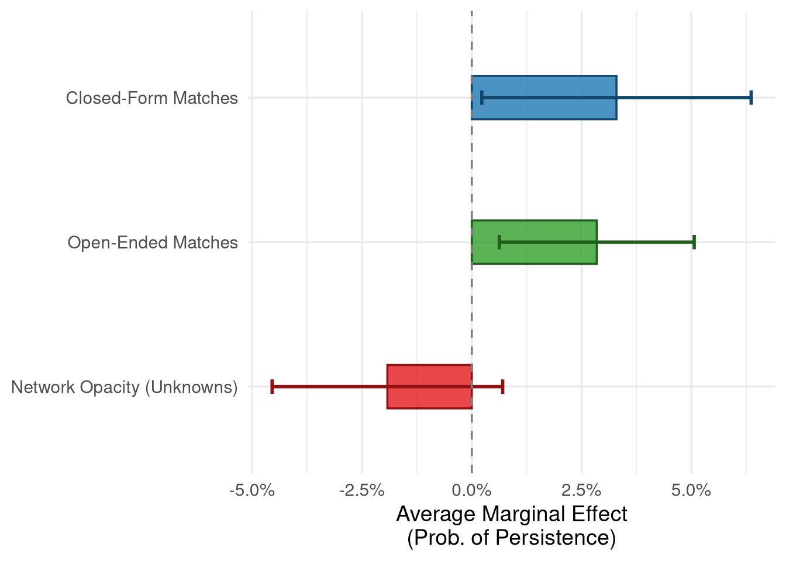
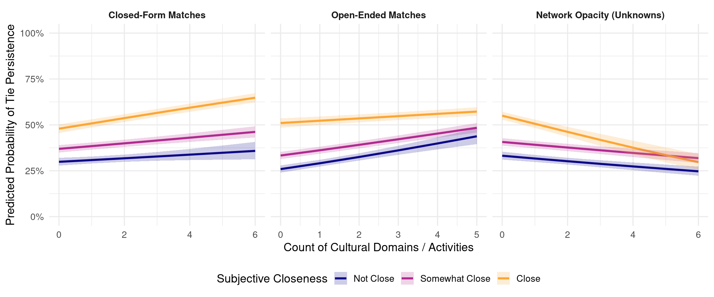

| Model 1: Closed | Model 2: + Open | Model 3: + Opacity | |
|---|---|---|---|
| + p < 0.1, * p < 0.05, ** p < 0.01, *** p < 0.001 | |||
| Closed-Form Matches | 1.225*** | 1.174** | |
| (0.060) | (0.059) | ||
| Open-Ended Matches | 1.322*** | 1.310*** | |
| (0.072) | (0.071) | ||
| Network Opacity | 0.748*** | ||
| (0.042) | |||
| Subjective Closeness: Somewhat | 0.526*** | 0.574*** | 0.583*** |
| (0.073) | (0.081) | (0.082) | |
| Subjective Closeness: Close | 0.332*** | 0.365*** | 0.419*** |
| (0.075) | (0.083) | (0.097) | |
| Tie Duration (Years) | 1.026 | 1.015 | 0.987 |
| (0.048) | (0.048) | (0.048) | |
| Tie Duration Squared | 0.998 | 0.999 | 1.000 |
| (0.003) | (0.003) | (0.003) | |
| Ego: Woman | 1.084 | 1.045 | 1.016 |
| (0.404) | (0.392) | (0.385) | |
| Alter: Woman | 1.414* | 1.300 | 1.247 |
| (0.240) | (0.224) | (0.217) | |
| Ego Woman × Alter Woman | 0.622+ | 0.714 | 0.750 |
| (0.163) | (0.190) | (0.202) | |
| Roommate/Dormmate | 1.117 | 1.031 | 0.886 |
| (0.441) | (0.413) | (0.357) | |
| Friend | 0.811 | 0.775 | 0.727 |
| (0.224) | (0.217) | (0.204) | |
| Frequency: Weekly/Daily | 1.120 | 1.158 | 1.115 |
| (0.184) | (0.192) | (0.187) | |
| Race Homophily: Same Race | 0.967 | 0.961 | 0.921 |
| (0.191) | (0.191) | (0.185) | |
| Race Homophily: Unknown | 0.162*** | 0.165*** | 0.157*** |
| (0.030) | (0.031) | (0.030) | |
| Time Period: Wave 2-5 | 0.053*** | 0.074*** | 0.063*** |
| (0.018) | (0.025) | (0.022) | |
| Time Period: Wave 5-6 | 0.090*** | 0.120*** | 0.088*** |
| (0.031) | (0.042) | (0.032) | |
| Num.Obs. | 3251 | 3251 | 3251 |
| AIC | 2562.3 | 2536.7 | 2518.5 |
| BIC | 2665.8 | 2646.3 | 2628.1 |
Cultural Matching Analysis
Overview
This analysis file examines the role of cultural matching and network opacity in predicting the persistence of social ties over time. We pool data across adjacent waves from the NetSense study to construct a person-period dataset, restricting the sample to non-kin, on-campus student ties. We estimate the probability of tie persistence as a function of cultural matching (closed-form domains and open-ended activities) and network opacity (the number of “Don’t Know” responses regarding an alter’s preferences) using mixed-effects logistic regression (lme4::glmer).
Main Effects Models
The following models assess the main effects of closed-form cultural matching, open-ended cultural matching, and network opacity on the odds of tie persistence. Model 1 shows that closed-form matches independently predict persistence. Model 2 introduces open-ended matches, demonstrating the value of incorporating both open and closed-form items. Model 3 incorporates network opacity (the number of “Don’t know” responses regarding an alter’s preferences). The main effects model reveals that a lack of shared cultural knowledge signals a weaker tie.
Marginal Effects
Figure Figure 1 visualizes the marginal effect (calculated as the change from the minimum to the maximum value) of closed-form matches, open-ended matches, and network opacity on the predicted probability of tie persistence.

Subjective Closeness Interactions
To test whether the protective effects of cultural matching or the detrimental effects of network opacity depend on the strength of the tie, we estimated auxiliary interaction models between subjective closeness and each of the three cultural variables. While interaction terms in logistic regression models can be difficult to interpret directly from coefficients due to the non-linear link function, computing predicted probabilities across the range of the variables provides a clearer picture of the underlying dynamics.
Figure Figure 2 plots the marginal effects of the three cultural variables across the three levels of subjective closeness.

As the marginal effects plot clearly demonstrates, the role of cultural matching varies substantially by subjective closeness. For “Not Close” ties (the steepest slopes), an increase in shared cultural tastes—whether measured through closed-form domains or open-ended activities—dramatically increases the probability of tie persistence. Conversely, for ties that are already “Close,” the slope is essentially flat. This suggests that shared cultural tastes provide critical scaffolding that helps weak ties survive, whereas strong ties are resilient to decay regardless of cultural matching. Similarly, network opacity exerts its most severe negative effect on ties that are not subjectively close.
Appendix: Descriptive Statistics
| Variable | Mean | SD | Min | Max |
|---|---|---|---|---|
| Closed-Form Matches | 2.12 | 1.47 | 0.00 | 6 |
| Open-Ended Matches | 2.44 | 1.32 | 0.00 | 5 |
| Cultural Network Opacity | 0.81 | 1.51 | 0.00 | 6 |
| Tie Duration (Years) | 3.01 | 4.19 | 0.08 | 20 |
| Variable | Category | N | Percent |
|---|---|---|---|
| Alter Gender | Men | 1160 | 53.5 |
| Alter Gender | Women | 1007 | 46.5 |
| Ego Gender | Men | 1127 | 52.7 |
| Ego Gender | Women | 1010 | 47.3 |
| Friend | No | 236 | 10.9 |
| Friend | Yes | 1939 | 89.1 |
| Race Homophily | Heterophilous | 217 | 10.0 |
| Race Homophily | Homophilous | 500 | 23.0 |
| Race Homophily | Unknown | 1458 | 67.0 |
| Roommate/Dormmate | No | 2062 | 94.8 |
| Roommate/Dormmate | Yes | 113 | 5.2 |
| Subjective Closeness | Close | 302 | 14.1 |
| Subjective Closeness | Not Close | 712 | 33.3 |
| Subjective Closeness | Somewhat Close | 1127 | 52.6 |
| Tie Persisted | No | 1489 | 68.5 |
| Tie Persisted | Yes | 686 | 31.5 |
| Time Period | Wave 1 to 2 | 104 | 4.8 |
| Time Period | Wave 2 to 5 | 1365 | 62.8 |
| Time Period | Wave 5 to 6 | 706 | 32.5 |